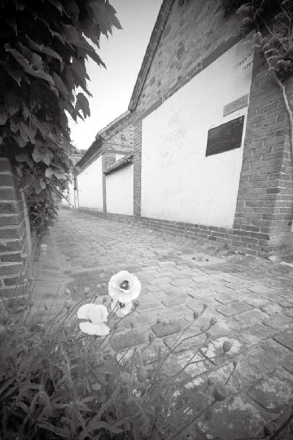
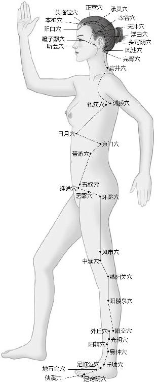
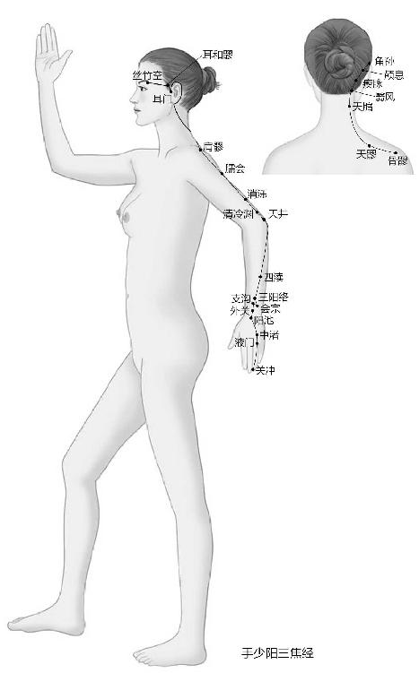
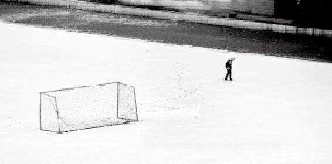
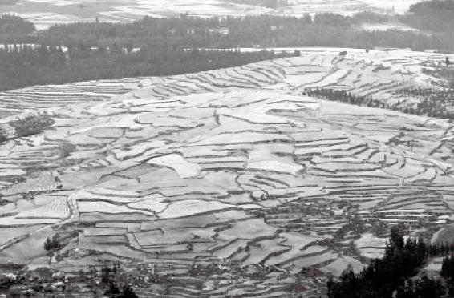

32岁的男人最迷人，这时候男人虽然不长个儿了，但是剩下的精气会充实到身体的各个部分，让男人会变得宽，变得厚，体重也稍微会增加一些，生理会达到一个高峰，这叫“盛”。
道家有个观点，人这一辈子吃的饭是有定数的，早吃多吃，你早完蛋；慢慢吃，悠着点吃，你活得就长。
32岁以后，你还在吃，还在转化，但是漏的多，补的少，这时候人的生理状况就呈下降的趋势。
经文：
四八筋骨隆盛，肌肉满壮；五八肾气衰，发堕齿槁；六八阳气衰竭于上，面焦，发鬓颁白；七八肝气衰，筋不能动；八八天癸竭，精少，肾脏衰，形体皆极，则齿发去。肾者主水，受五脏六腑之精而藏之，故五脏盛乃能泻。今五脏皆衰，筋骨解堕，天癸尽矣，故发鬓白，身体重，行步不正，而无子耳。
“四八筋骨隆盛，肌肉满壮”
梁冬：我们接下来就要讲“四八筋骨隆盛，肌肉满壮”，徐老师，为什么叫“隆盛”呢？
徐文兵：“隆”是指发力的时候，筋绷起来，鼓起来的那个样子。这时候男人虽然不长个儿了，但是剩下的精气会充实到身体的各个部分，让男人会变得宽，变得厚，体重也稍微会增加一些，生理会达到一个高峰，这叫“盛”。
梁冬：筋骨隆盛，一想起来就觉得很性感的样子。
徐文兵：所谓性感就是当一个人的肾气充盈，表现出很强的生育能力时，所流露出来的那种气氛、感觉，甚至是一种味道。
所谓性感就是当一个人的肾气充盈，表现出很强的生育能力时，所流露出来的那种气氛、感觉，甚至是一种味道。
梁冬：我俩只能站在男性的角度来思考问题，我们知道什么样的女性是性感的，但是其实我一直不能确切地知道男性肌肉丰满、很壮的样子对女性是否有性感的吸引力？
徐文兵：子非鱼焉知鱼之乐也。
梁冬：我一直以为会写一篇好作文的男人，她们就觉得挺性感。
徐文兵：性感表现在很多方面，有些表现在形，就是形体的性感，比如说这男人有他的性征。如果一个男人肩膀不宽，也没有胡子，甚至没有喉结，一说话娘娘腔，他就不性感，但或者会让另外一些有特殊爱好的人觉得很性感。
如果一个男人肩膀不宽，也没有胡子，甚至没有喉结，一说话娘娘腔，他就不性感，但或者会让另外一些有特殊爱好的人觉得很性感。
梁冬：不是吧，你看现在流行的那些男性偶像不都长那样吗？
徐文兵：这是一种病态的、畸形的美。我们上中学时学过龚自珍写的《病梅馆记》，当时的人们把梅弄得很扭曲，很拧巴，认为那样才美，但实际上，它是一种病态的美。
当一个男人的阳气或者精力不足的时候，他靠什么取得一种平衡的美感呢？靠削弱女人。所以我们古代社会最大的一种病态行为就是把女人的脚给缠起来，让女人无力支撑，婷婷袅袅、弱不禁风，那时候的男人欣赏这种病弱的美。
当一个男人的阳气或者精力不足的时候，他靠什么取得一种平衡的美感呢？靠削弱女人。
而现在的很多男人喜欢的却不见得都是《红楼梦》里的林黛玉，身体相对弱的、缠绵的、多愁善感的男人欣赏林黛玉，而一些比较强壮的、精力旺盛的男人，他欣赏的可能就是史湘云或者薛宝钗。每个人的审美跟他的身体基础有关系。

梁冬：“肌肉满壮”这句话，徐老师如何解呢？
徐文兵：“肌”和“肉”是完全不一样的。中国人“慧”的水平非常高，同一个东西它处在不同的时候或者状态时，我们用来描绘它的词也不一样。
梁冬：是的，你看西方人说肌肉“muscle”就完了，那么，“肌”和“肉”到底有什么不一样呢？
徐文兵：举个例子，我们说“花”是名词，而当花正好绽放，吐露芬芳的时候我们说“华”，在英语里就是一种“ing”的状态。
梁冬：我还以为是“花+ing”呢。
徐文兵：名词加“ing”，它描写的就是正在进行的状态。
梁冬：春华秋实。
徐文兵：春天要开花，秋天要结果。还有一个词叫“华而不实”，光开花不结果。它把那种带有气，带有动作的感觉用一个词表达出来了。但可能是因为我英语也没学好，在英文中我就没找到一个对应的词来表达它。
回到刚才的话题，“肌”和“肉”描写的是同一个物质，但描写的是这个物质的不同状态。比如，我们北京人说这个人很“肉”。
梁冬：常常都有，以前我们班有个同学叫“牛肉面”，姓刘，又“肉”又“面”，所以叫“牛肉面”。
“肉”是一种什么状态？没劲，就是萎软的，提不起来，没弹性的那种状态。
徐文兵：有的人说你开车真“肉”，“肉”是一种什么状态？没劲，就是萎软的，提不起来，没弹性的那种状态。所以，同样是这块肉，当它处于放松状态时，我们管它叫“肉”；可当它发力绷起来的时候，我们就管它叫“肌”。有些人处于老发力，不放松，肌肉紧绷的状态，就叫“有肌无肉”。
我们很多人老在电脑前保持一个姿势，最后肌肉条索一摸，咯楞咯楞的，这叫肌。
我们很多人老在电脑前保持一个姿势，最后肌肉条索，一摸，咯楞咯楞的，这叫肌。还有的人，比如偏瘫的人，肌肉老不活动，最后就松弛萎缩了，这就是比较“肉”。我们这里说的肌肉充盈的状态，是说它在该发力的时候能绷起来，该放松的时候又很软。
梁冬：真是不得不承认，我们大部分的人都是没文化的，分不清“肌”和“肉”。“满壮”这两个字有得讲吗？
我们大部分的人都是没文化的，分不清“肌”和“肉”。
徐文兵：“满”是充盈的，就是说有其物质的存在。有的人，你捏一捏他的小腿肚子，捏一捏胳膊上的肱二头肌，没有“小耗子”，没肉。
梁冬：还有一种情况是，一摁下去一个坑儿，这是浮肿。
徐文兵：浮肿既不满，也不壮。“满”是物质基础，“壮”是功能。
我们中国人骨子里就有遗传下来的一种哲学素养，认识事物，不光只看到了它的物质基础，还会意识到了推动物质运动的那个东西，即功能，我们管它叫“气”。这种对气和神的认识，是我们从小就潜移默化受到的影响。比如，我们经常说这个人喜气洋洋、怒气冲冲或者杀气腾腾，说这人一脸晦气等。
认识事物，不应只看到了它的物质基础，还要意识到推动物质运动的那个东西，即功能，我们管它叫“气”。
《黄帝内经》里讲的物质，后面都跟着一个东西，比如讲“精”，后面有个“气”；讲“满”要讲“壮”；讲“筋”，要讲“强”讲“劲”，“强”指它的坚硬程度，“劲”是说它有弹性。也就是说，连起来的两者贯穿了对物质本身以及对物质的运动状态的认识。辩证唯物主义的第一句话就是说“世界是物质的”，很多人只记得这句话，却忘了它后面还有一句“物质是运动的”。
“强”指它的坚硬程度，“劲”是说它有弹性。
梁冬：其实物理学里面也有类似的讲法。比如，能量、功。物质本身是存在的，但不管它有多少牛顿，它里面都还有另一样东西的存在。这种东西可以是势能、动能等，负责推动物质的运动。
徐文兵：我们经常说“大势所趋”“势不可挡”，这个“势”到底是什么？就是背后的那个能量。
梁冬：摧枯拉朽。
徐文兵：势不可挡。
“五八肾气衰”
梁冬：男人过了32岁以后，生理就开始慢慢走向衰落了。40岁的时候就更可怜，“五八肾气衰，发堕齿槁”。
有的女人会不会有这样的一个观念，就说一个男人，你熬他熬到三十六七岁，他就不会在外面折腾了。
徐文兵：我们要顺应自然，明白盛极必衰。
梁冬：有的女人会不会有这样的一个观念，就说一个男人，你熬他熬到三十六七岁，他就不会在外面折腾了。为什么呢？他自己力气不够了，能把家里面这摊子事处理好就不错了。到40岁的时候，肾气就衰了。
男人到40岁的时候，肾气就衰了。
徐文兵：男人32岁以后，身体开始走下坡路了，这一点，我自己有明显的感觉。大学毕业时，我24岁，正是风风火火地一心要做事情，要往前闯的那个年龄。
梁冬：总觉得怀才不遇？
徐文兵：没有，那会儿也没觉得怀才不遇，就觉得身上有使不完的劲。到了32岁以后，我的第一个感觉就是，不能熬夜了。
梁冬：这倒是真的。
徐文兵：你说你有没有同感啊？
梁冬：有啊，我常常碰见一些同龄人，他们都说，年轻的时候晚上打通宵的麻将都没事儿，后来年纪大了晚上剪一个片子或者讨论个剧本，都没有力气了。
徐文兵：确实是这样的。我毕业后留在东直门医院，开始是搞行政的，有时候处理一些纠纷、事故等，一晚上都没睡，第二天洗把脸，该干嘛干嘛。可是32岁以后，要是让我熬个夜或者值个班，第二天还不能补觉，得接着干，那我就要困不欲生，连死的心都有了。
梁冬：万念俱灰。
徐文兵：就是精和神完全支撑供应不上了，觉得眼睛干涩，睁不开。我们说人的体液也是身体“精”的一部分，由肾精所化。白天养阳，晚上睡觉养阴，因而晚上不睡觉是违反自然规律的。以前肾精足还能供得上，过了32岁以后，不仅眼干，而且还口干。
白天养阳，晚上睡觉养阴，因而晚上不睡觉是违反自然规律的。
所以那会儿谁要让我值班，我就求爷爷告奶奶，完全不想值；还有朋友说一块儿出去玩，我说那行，你们想怎么玩，比如你们搓麻将输多少钱，行，我就先把钱输给你们。我就怕最后熬得又输钱又输人，身体精力支撑不住了，其他就什么也跟不上了。
所以一般男人关注养生也是从32岁开始。老百姓有句俗话叫什么？30岁以前人找病。“人找病”是什么意思？就是比如冰天雪地脱光了裸奔、游泳都没事的那个状态。
一般男人关注养生也是从32岁开始。
梁冬：“让我在雪地里撒点野”，崔健说的。
徐文兵：你看现在崔健就不写这种歌了。
梁冬：他也写不出来了。
徐文兵：30岁以前，人找病，找了半天还不得病，因为肾气足。到了30岁以后是什么？病找人，这儿不舒服了，那儿也不舒服，这时候才想起关心养生，学中医了。如果我们给那些32岁以前的男人或是28岁前的女人去讲《黄帝内经》，人家会说：“这关我什么事？”毫不关心。大家一般都是过了这个生理高峰以后，力不从心了，才会想到要养生。
如果给那些32岁以前的男人或是28岁前的女人去讲《黄帝内经》，人家会说：“这关我什么事？”毫不关心。
“发堕齿槁”
梁冬：接下来是“发堕齿槁”。
徐文兵：“发堕”是说男人40岁开始脱发。这个“齿槁”是什么意思呢？我们经常说木头没有水了，就叫“枯槁”。齿槁就是牙齿枯槁了！人的牙齿与肾有关。
梁冬：肾有余嘛。
徐文兵：对，肾之余，骨之余，长牙齿。40岁之前，人的牙齿本来是滋润的，甚至“齿如寒贝”，闪着光泽。40岁以后，牙变成什么样了？干涩枯槁。原来咬核桃，一咬“嘎嘣”，核桃碎了，现在再咬核桃，核桃没碎，什么碎了呢？
40岁以后，牙变成什么样了？干涩枯槁。原来咬核桃，一咬“嘎嘣”，核桃碎了，现在再咬核桃，核桃没碎，什么碎了呢？
梁冬：牙碎了。所以你很少能见到40岁的男人还用牙齿开啤酒的。
徐文兵：可以对照这两句话，“丈夫8岁，发长齿更”，到了五八是什么？“发堕齿槁”。生命就是这么残酷无情。
梁冬：从另外一个角度来看，我们应该从容面对。
徐文兵：当然，男人40岁开始脱发、掉牙齿，这是从理论上来说的一个普遍的规律。但懂得养生，平时注意照顾自己身体的人，就不会出现这个问题，至少他的头发不会掉得那么厉害，不会谢顶。很多人活到八九十岁，还有一口好牙，他们都是懂得养生之道的人。
很多人活到八九十岁，还有一口好牙，他们都是懂得养生之道的人。
梁冬：现在有很多人还不到40岁就这样了，这个问题尤其需要大家留意。
“六八阳气衰竭于上，面焦”
梁冬：接下里讲“六八阳气衰竭于上，面焦，发鬓颁白。”48岁已接近于半百了，黄帝曾说“年半百而动作皆衰”，一般人接近50岁的时候会出现什么问题呢？“阳气衰竭于上”。
徐文兵：女人属阴性，本来阳气不足，到了35岁，“面始焦，发始堕”，这是正常的；而男人本身充满了阳气，因而他出现“面焦”即脸色发黑，失去润泽的年龄要相对晚一点。但是到了48岁以后，他的阳气就到不了脸上，于是脸色就会变得焦黑、出现皱纹等情况。
男人本身充满了阳气，因而他出现“面焦”，即脸色发黑，失去润泽的年龄比女人要相对晚一点。
梁冬：我想问个问题，阳气的出发地是不是在肾？
徐文兵：出发地不是在肾。
梁冬：在哪儿呢？
徐文兵：我们讲女性的时候，特意说过，先是“阳明脉衰”，后来叫“三阳脉衰于上”。这些经络指的不是走元气的那些经络，而是后天之气所走的十二正经。我们的六腑弱了，即胃、大肠、小肠、膀胱、三焦、胆的消化功能弱了，经络没有额外的力量走到脸上，于是就出现“三阳脉衰于上”。人的脸上分布有六条经脉，都是六腑的经脉：膀胱经经过额头和两条眉毛中间、胆经和三焦经经过眼角、大肠经经过鼻子两边、整个覆盖在脸上的是胃经、小肠经经过颧骨，大致就是这样分布的。
六腑，即胃、大肠、小肠、膀胱、三焦、胆。
由于整张脸全被六条阳经覆盖，所以当你消化功能好、阳气足的时候，你就总是满面红光，或者是鹤发童颜；当六腑的消化功能差的时候，首先表现出来的是什么？满脸的焦黑、焦黄、晦暗之气。通过中医调理以后，消化功能得到恢复，这个人的脸色才会开始慢慢变白，印堂开始发亮，这时可以说阳气恢复了。
由于整张脸全被六条阳经覆盖，所以当你消化功能好、阳气足的时候，你就总是满面红光，或者是鹤发童颜。
梁冬：我们了解中医的这个原理之后，可以从一个人脸上的光泽度来了解他的内脏情况。
我们了解中医的这个原理之后，可以从一个人脸上的光泽度来了解他的内脏情况。
徐文兵：中医讲究“望闻问切”。“望”，我们叫“望神”，看这人的眼睛里有神没神。我们说男女互相吸引，一见钟情，它也跟“神”有关，四目一对，然后有那种心如撞鹿、触电的感觉，先触动神，再产生气。
我们说男女互相吸引，一见钟情，它也跟“神”有关，四目一对，然后有那种心如撞鹿、触电的感觉，先触动神，再产生气。
“望神”之后，我们就要望整个的脸色，包括你说的脸的颜色、润泽度，还有斑点的问题，这些都是中医望诊的内容。
梁冬：我有个技术性的问题想请教您，就是女青年一看见自己喜欢的男青年，脸上就开始泛红，从技术上来讲，这是什么原因？
徐文兵：动心了嘛。
梁冬：是因为眼睛看到一样东西动了心，心又反馈到脸上？
徐文兵：对。我们说人心触动的表现是什么？脸红、心跳、出汗，然后瞳孔放大，还有的人会咽唾沫。
梁冬：紧张的时候咽唾沫。你看犯罪分子一被抓进去审问的时候，就开始咽唾沫。
徐文兵：这也是动心了。当一个女青年眼巴巴望着你干咽唾沫的时候，就知道她动心了。
当一个女青年眼巴巴望着你干咽唾沫的时候，就知道她动心了。
梁冬：那是不是眼巴巴时间长了却没有结果，就望穿秋水了。
徐文兵：对，秋水代指人的眼睛。
“发鬓颁白”
梁冬：接下来讲“发鬓颁白”，我想请问，为什么发鬓是两角开始白，而不是后面也不是前面呢？
徐文兵：这就涉及到经络的分布，人的头顶是督脉，两边是膀胱经，鬓角走的三焦经和胆经。三焦经和胆经，在消化功能里主“化”，就是把猪肉变成人肉的那个过程。那这个胆经和三焦的根在哪儿呢？听我慢慢说。我们说肾属水，那么肝胆属什么呢？
当人的肾气、肾精衰竭了以后，第一个表现就是肝胆的气不足了。
梁冬：肝胆属木。
徐文兵：水生木，所以当人的肾气、肾精衰竭了以后，第一个表现是什么，肝胆的气不足了。年轻的时候胆子很大，我记得上学的时候，常常互相追逐打闹，往很高的墙头上跑，一砖宽的墙我们也敢在上面，现在想起来都后怕，但当时却无畏，为什么？肾气足。现在别说让往上跑，我单单站在上面看一眼都觉得害怕。
梁冬：这是为什么呢？
徐文兵：人胆子的大小跟肾精有直接的关系。都说别和毛头小伙子打架，这些人下手没有轻重，胆子极大。等他老了，知道轻重了，知道了我该达到什么目的、有考量的时候，肾气已经开始衰了。
人胆子的大小跟肾精有直接的关系。
梁冬：我们常常讲“胆大妄为”，以前还以为是个形容词，其实它是个描述性的状态词，描述生理问题。
徐文兵：生理功能决定的东西，你要引导它，把它引导到一个正确的方向，否则就容易出事。
生理功能决定的东西，你要引导它，把它引导到一个正确的方向，否则就容易出事。

足少阳胆经
女性第一道皱纹起于眼角，男性的发鬓最先斑白，问题都出在胆经和三焦经上。

梁冬：是不是就是说肾精足，所以胆大？胆大的时候，人就比较有勇气，做事也比较鲁莽？
是不是就是说肾精足，所以胆大？胆大的时候，人就比较有勇气，做事也比较鲁莽？
徐文兵：对，古代曾有人解剖过三国时期的姜维，那个非常具有胆量的人，发现他的胆子已经大得远远超过常人。所有人表现出来的形而上的那种思想、情绪，其实都有物质基础。
刚才我说了，胆是少阳，属于肾的孩子，肾精足，人的胆子就大。另外，胆主决断，年轻的时候说干就干，不计后果，直接冲上去，到了一定的年龄，胆气衰了，就开始变得优柔寡断。
胆主决断，年轻的时候说干就干，不计后果，直接冲上去，到了一定的年龄，胆气衰了，就开始变得优柔寡断。
梁冬：所以很少有四五十岁的人，敢于放弃高管的职位出来创业的，就算他有钱、有经验，也创不了业，因为他没有决断力了。
徐文兵：还有三焦经，跟肾精关系更加密切，它是走元气的经络，这种元气起于丹田。
从女性来讲，她的第一道皱纹出现在哪儿？眼角！正好是三焦经和胆经的都经过的那个位置；作为男人来讲，鬓角也是三焦经和胆经循行的部位，因而“发鬓颁白”。苏东坡说“早生华发”，可能就是说没到48岁就被折磨得两鬓斑白了。
梁冬：喝酒、思考、写诗造成的，是吧？
徐文兵：是的，苏东坡也是多情的才子。
梁冬：古代的文人，跟现在的知识分子不一样，我们现在充其量就是聊一聊学术问题，古代人都是去有青楼女子的酒楼。
徐文兵：所以古人“早生华发”的原因，就在于肾精耗竭以后所导致的胆功能不足。我们说“发为血之余”，也说过“肾其华在发”，意思就是肾表现出来的颜色在头发上。中国人得天地之精气照顾，头发是黑色的，因为肾气足的人是乌发，而外国人是其他颜色，但老外到了一定年龄也会出现头发灰白的问题。
“早生华发”的原因，就在于肾精耗竭以后，导致胆功能不足。
中国人得天地之精气照顾，头发是黑色的，因为肾气足的人是乌发。
梁冬：有些人天生就是白头发怎么办？
徐文兵：有遗传的原因。
梁冬：我听说，一个人年纪轻轻就当了老板，如果有很多白头发，一定性情暴烈。
一个人年纪轻轻就当了老板，如果有很多白头发，一定性情暴烈。
徐文兵：对，血热，心火太旺，就像你这种人。
梁冬：热血型。我脾气一点都不暴躁，公司同事都知道，我怕他们，他们从来不怕我。
“七八肝气衰，筋不能动”
梁冬：接下来是“七八肝气衰，筋不能动”，这个“肝气衰”怎么讲？
徐文兵：我们之前讲过，肾的子是肝和胆，这二者都属木。木主生发，是往上的。五行里面有两个是往上走的，两个是往下走的。肝属木，是往上走的、心属火，也是往上走的，因为火性炎上；肺属金，是往下走的，肾属水，也是向下走的。它们本来处于平衡状态，但是到了这个年龄段，原来生机勃勃的肝就开始出现萎缩、萎靡不振的情况了。
肾的子是肝和胆，这二者都属木。
梁冬：从五行来讲，肝主绿色，那么肝解剖出来是青的吗？
徐文兵：胆是青的，胆汁是青绿的。
梁冬：那肝呢？
徐文兵：肝是红的，因为肝是藏血的。肝胆对应我们身体的是筋。风吹来了，树弯倒了，风过去了，树又挺直了。筋的性质就像这样，需要发力的时候，它绷起来；需要放松的时候，它就松下去。
筋的性质就像这样，需要发力的时候，它绷起来；需要放松的时候，它就松下去。
另外，肝有个最重要的功能，就是主疏泄。什么叫疏泄呢？就是疏导开泄，它跟男女的性功能有着密切的关系。比如，女性要来例假，为什么？肝血藏到一定阶段以后，突然一泄，就出来了。男人的阴茎，也就是他们的性器官，中医称它为“宗筋”，这个器官也有跟木一样的性质，能屈能伸。需要用它的时候，它勃起，很坚硬；不需要的时候，它又很放松很软。以上说的是肝功能正常时的情况，到了这个年龄段，肝功能衰退了，因而疏泄功能也就差一点了。
男人的阴茎，也就是他们的性器官，中医称它为“宗筋”，这个器官也有跟木一样的性质，能屈能伸。
梁冬：所以有经验的老先生治阳痿，都是先调肝再补肾的。
徐文兵：现在的人都在胡乱地用中医方法，直接吃补肾药，其实那些药都是催心火的催欲剂。阳萎的原因是精漏得太多了，出于自我保护的需要，身体就会出现这种状况，意在警告你歇会儿，别折腾了。
但有的人一定要折腾，吃了很多春药，用它们来催心火和肝的气血，这实际上是在加快自己死亡的速度。真正有水平的老中医治疗阳萎的方法是调肝，治疗早泄则补肾。“宗筋”起不来就调肝，漏精厉害就补肾。有的人情况正好相反，叫阳强不倒，起来了就软不下去，这种情况也得调肝，所以起来和起不来都要治肝。
有的人一定要折腾，吃了很多春药，用它们来催心火和肝的气血，这是在加快自己死亡的速度。
什么是“筋不能动”？很多人都会出现这种情况，如果连接骨骼和肌肉的肌腱失去了弹性，就会一拧脖子“嘎啦嘎啦”响，筋不能动；还有人会出现骨关节病，上下楼梯膝盖就疼得不行。
真正有水平的老中医治疗阳萎的方法是调肝，治疗早泄则补肾。
出现上述情况时，有人以为是骨头磨损，其实问题出在负责连接、固定骨骼的那个筋、肌腱上，它们开始衰弱了。这个时候，人应该吃啥呢？你猜猜。
梁冬：炖点牛蹄筋。

不符合自然之道地催动自己的情欲，是在加速自己的衰老、加快自己的死亡速度。
徐文兵：对，蹄筋。不论男女，如果出现了筋的问题，就多吃点蹄筋，最好吃的就是鹿蹄筋。你看鹿那么轻盈、跑起来那么快、一蹦那么高，什么在起作用？筋！
梁冬：讲汉字的肖启宏老师，就提到“尘”的繁体字是“塵”，这个字上面就是“梅花鹿”的“鹿”，下面是个“土”。他说以前的土翻得很高，只有鹿踩在地上才会有“尘”。难怪您说鹿跳得高，能把灰尘弹起来。
徐文兵：能够卷起烟尘一骑而去，这说明人家的筋好、肝好，再往上还是肾好。
梁冬：话说回来，男人在56岁的时候，筋不能动了，是不是还要注意一个问题——很容易骨折？
筋的一个特别重要的作用就是固定骨骼的位置。
徐文兵：不是。筋的一个特别重要的作用是固定骨骼的位置。现在很多人有椎间盘突出的毛病，为什么？其实椎间盘是一个软骨，介于筋和骨之间，是固定我们腰椎的肌腱，它失去了弹性，不能适应人的过度剧烈或者是奇怪姿势的改变，结果就导致筋不能动，很容易伤到骨。
现在我们很多人瞎吃补药补钙，其实不对。这跟往地里施化肥没啥区别，补钙把骨头都补得脆了，虽然它还是很硬，但是失去了弹性，结果摔一跤就能摔成好几截。
我们现在很多人瞎吃补药补钙，其实不对。
梁冬：粉碎性骨折。
徐文兵：营养的补充还是得从食物调养着手，根据自己的情况，选择适合自己的食物，不要乱用药。
营养的补充还是得从食物调养着手，根据自己的情况，选择适合自己的食物，不要乱用药。
梁冬：腰椎间盘突出的人是不是可以适当地多吃一点蹄筋来调养筋？
徐文兵：是。虽然腰椎间盘突出的原因也要因人而异，但是我临床碰到的都是筋和肌肉先出了问题，才伤到骨。
“八八天癸竭，精少，肾脏衰，形体皆极，则齿发去”
梁冬：接下来是“八八天癸竭，精少，肾脏衰，形体皆极”，“天癸”一般是指性荷尔蒙，对不对？
徐文兵：“天癸”到现在还没有一个确切的概念，它是天赋的由肾精化生的一种物质或者能量，起促进和维持性功能的作用。这句话按考证来说它应该放在八八。
“天癸”是天赋的由肾精化生的一种物质或者说是能量，起促进和维持性功能的作用。
梁冬：那为什么放在七八了呢？
徐文兵：在古代，《黄帝内经》是写在竹简上的，没准儿哪个好学的人把牛皮筋翻断了，这根竹简掉到下一根上，那个人又不懂，一接接错了。所以读书不光要认错别字、通假字，还要认识错简。七八这个阶段讲的是肝，到了八八讲的是什么？最后藏的那点精——肾精。
梁冬：所以应该是“八八天癸竭，精少，肾脏衰”。
徐文兵：男性到了八八64岁，我们说他过了一寿了，即一个甲子，以后基本上这个人的精子数目、成活率以及活动度就告一段落了，从此也就没什么生育能力了。
七八56岁的时候，他的性功能衰竭了，筋不能动了，也就是说不能行人道，或者出现了我们说的阳萎的问题。到了八八干脆就连子弹也没了。七八时是有子弹不能发射，没准他通过现代科技手段做人工授精还能怀孕，到了八八，干脆连制造精子的功能都没有了，彻底不能生育了。
七八时是有子弹不能发射，没准他通过现代科技手段做人工授精还能怀孕，到了八八，干脆连制造精子的功能都没有了，彻底不能生育了。
梁冬：男人到了八八64岁时，不光没有了生育能力，还“则齿发去。肾者主水，受五脏六腑之精而藏之，故五脏盛乃能泻”，这句话是什么意思？
徐文兵：就是说，到了这一阶段不光是掉头发、牙齿枯槁的问题，而是齿发尽去了，一张嘴没牙了，头发也掉得很稀疏，基本上掉光了，即便没掉也全白了。
梁冬：现在很多老年人不得不戴假牙，刷牙时，左手拿着牙，右手拿着牙刷。
徐文兵：这是身体肾精、肾气不足的典型表现。
梁冬：但为什么这里讲到“肾者主水”呢？
徐文兵：这就是我们讲的五脏跟五行的对应关系：木对应肝、火对应心、金对应肺、脾对应土、肾主水。
梁冬：那为什么前面都不提，到八八的时候突然讲“肾者主水”呢？
徐文兵：意思就是说维持我们生长发育、生殖功能就靠着先天的那点精，这个精就是我们所说的先天之水，绝对不是我们后天喝的这个水。
梁冬：举例来说，人体的这个先天之水，就像地球上的石油一样，它不是后天可以炼出来放进去的，而是天然就存在的，是几世、几十世累积下来的。
人体的这个先天之水，就像地球上的石油一样，它不是后天可以炼出来放进去的，而是天然就存在的，是几世、几十世累积下来的。
徐文兵：这个水就是我们讲的精化生出来的体液，而不是喝进去的水。很多人都说要多喝水，补液体。我说，你补的可能都是邪气，为什么呢？这个水如果不经过你的消化、转化的话，它没法跟肾精结合，变不成你的体液。很多人喝一肚子水，“咣咣”响，一摸上去，没消化，变成尿排出来，结果还伤肾。
水如果不经过你的消化、转化的话，它没法跟肾精结合，变不成你的体液。很多人喝一肚子水，“咣咣”响，一摸上去，没消化，变成尿排出来，结果还伤肾。
我们刚才说胆是青绿色，青又包括蓝和绿两种颜色；心，赤色、红色；脾，土色、黄色；肺，白色；肾，黑色。肾主水，那么我问一下，水是什么颜色的？
为什么中医说肾水是黑的？
梁冬：黑色。
徐文兵：水为什么是黑色的？在自然界，我们看见的水是无色透明的，大海是蓝的，为什么中医说肾水是黑的？是因为这个水是从天上降下来的水。我们知道黑云压城城欲摧，云是什么颜色的？
梁冬：黑色的。
徐文兵：对，这种积雨云蕴含了大量的水，它降到地下，地下的水再变成汽蒸腾到天上，这时候就完成了一个天地交流的循环。有了这种交流，才产生了天地之气，才有了阴阳的交流，才产生了生命。地球上为什么有生命？为什么其他星球上目前没有生命？就是因为地球上有这种阴阳的交流。那我们身上的水从哪儿来？
地球上为什么有生命？为什么其他星球上目前没有生命？
我们身上的水从哪儿来？
梁冬：从肺来。
徐文兵：不对。
梁冬：不是吗？肺不是主降、肃降吗？
徐文兵：我们身上的水也从天上来，对不对？人是天地的产物嘛。我们自身也是个小宇宙、小天地。人的水从哪儿来？我们的水存在哪儿？
梁冬：我们的天在哪儿？
徐文兵：你说呢？
梁冬：我想，既然是天，那是不是头脑呢？
徐文兵：对啦，脑髓。我们经常说精，精在哪儿？精就是你的髓，就是骨子里的东西。脑髓、脊髓、骨髓，都是我们的“水”。
脑髓、脊髓、骨髓，都是我们的“水”。
梁冬：那是黑色的吗？
徐文兵：当然。转化的过程就是我们身体肾精转化成气、液的过程，所以“肾者主水”这句话是对我们整个生理功能的一个总结。
“肾者主水，受五脏六腑之精而藏之，故五脏盛乃能泻。今五脏皆衰，筋骨解堕，天癸尽矣，故发鬓白，身体重，行步不正，而无子耳”
徐文兵：为什么男人到64岁就没有精了，然后齿发皆去了？肾主封藏，我们的肾原本藏了很多这种精髓（水），经过这么多年的消耗，到现在漏光了，所以才会出现这一系列的症状。言外之意是说，如果你节约用“水”的话，就不会出现这些问题。
所谓变暖其实是地球表层的变暖，下面反而空了。
梁冬：讲到这里，我就越发为地球感到担心了，其实地球上的石油很像中医里面讲的肾精。
徐文兵：对，石油是经过几亿年、几亿万年攒下来的东西。
为什么现在有那么多的天灾？
梁冬：你看石油一开采出来之后，地球就变暖。所谓变暖其实是地球表层的变暖，下面反而空了。为什么现在有那么多的天灾？实际上就跟人体的道理一样，肾精透支过度之后，人就很容易生病。
徐文兵：真的，你看煤炭也是黑的。
梁冬：这就是为什么以前的佛家不建议人们烧煤炭，说那东西叫劫灰。古代的人肯定也知道煤是可以拿来烧的，对不对？但他们却不怎么烧煤。
以前的佛家不建议人们烧煤炭，说那东西叫劫灰。
徐文兵：回到脏腑的关系，我们说“脏藏于内，藏而不泄；腑传化物而不藏”，“脏”与“腑”一阴一阳。随着生理的成熟和逐渐衰老，肾脏和其他各脏藏的那点儿精都慢慢消耗尽了，人的生命也就逐渐终止了。

现在很多人表面看着没事，其实底子已经被掏空了。
梁冬：“五脏盛乃能泻，今五脏皆衰，筋骨解堕，天癸尽矣，故发鬓白，身体重，行步不正，而无子耳”。
徐文兵：这就是对英雄末路、美人迟暮的一个概括。这里讲到了“行步不正”，现代医学对它的诊断叫“小脑萎缩”。小脑是负责身体平衡的，如果脑髓消耗过多，或者是经过了一些不正常的消耗以后，小脑就会萎缩，人走路就不能保持一条线，无法平衡，这其实也是肾衰的一个表现。
梁冬：肾主骨和脑髓，现在所说的小脑萎缩，其医学道理其实很简单，那就是肾气不足，撑不住了。
现在所说的小脑萎缩，其医学道理其实很简单，那就是肾气不足，撑不住了。
徐文兵：古代的人早就意识到了这个问题。
梁冬：其实我们每个人生下来就有“一罐气”，也就是肾精。有没有办法能够往里加呢？
徐文兵：有啊。我们吃五谷就能把植物的精转化成自己的精，储存起来。
梁冬：那转化的精和原有的精有没有差别呢？先天和后天不一样吧？
徐文兵：先天的就是你说的这罐“气”，后天的是由其他物质转化而来的。但有一个问题要注意，你在吃饭的同时，饭也在吃你。
你在吃饭的同时，饭也在吃你。
梁冬：此话怎讲？
徐文兵：呵呵，你看风景的时候，风景也在看你。就是说，我们把食物、猪肉转化成人肉，把五谷之精转化成我们的脂肪、骨髓的这个过程，同时也要消耗我们的元气。你吃得越多，元气消耗得也就越多。但是人有个生理高峰，比如男人在32岁之前，转化的多，消耗的少，所以这时就一直在积累。
把食物、猪肉转化成人肉，把五谷之精转化成我们的脂肪、骨髓的这个过程，同时也要消耗我们的元气。你吃得越多，元气消耗得也就越多。
梁冬：好现象。
徐文兵：在积累，在长个儿，在长壮。32岁以后，你还在吃，还在转化，但是漏的多，补的少，这时候人的生理状况就呈下降的趋势。
梁冬：是转换能力变差了还是吸收能力变差了？
徐文兵：转化能力和吸收能力都差了。这个转化能力就是指元气。文人说：“廉颇老矣，尚能饭否？”是说这个人还能不能打仗、能不能长寿，就要看他的饭量。如果这个人能吃饭，而且能把吃的饭转化成自身的精气神，那这人年度百岁就没问题。但是那个廉颇呢？当皇帝派人去考察，看这位老将军还能不能吃饭？因派去的人是个奸臣，受人指使，一看廉颇还能吃，汇报给皇帝时就加了一句，说廉颇吃得倒是不少，但是一顿饭的功夫上了三次厕所，光能吃，不能吸收了，结果还是不行。
如果这个人能吃饭，而且能把吃的饭转化成自身的精气神，那这人年度百岁就没问题。
前面我们说了情欲，也就是性行为会消耗我们的元气，其实饮食也是消耗我们元气的一个主要原因。所以我们一定要注意饮食，现在，有的人不但暴饮暴食，还吃很多没用的东西。比如，有的人本来已经饱了，不想再吃了，但还要在饭菜里多加盐、味精、辣椒等刺激的佐料，把胃口刺激开再吃。这就跟那些没有性能力的人吃春药一样，把人的消化能力透支了。所以道家有个观点，人这一辈子吃的饭是有定数的，早吃多吃，你早完蛋；慢慢吃，悠着点吃，你活得就长。
饮食也是消耗我们元气的一个主要原因。
这就是我们说的补充肾精的方法：一是不要让它漏，另外就是从我们的饮食里面，尽可能高效率地把吃的食物转化成精，去充填我们的脑髓和骨髓。而这里面排在第一位的食物就是五谷。
充填我们的脑髓和骨髓，排在第一位的食物就是五谷。
梁冬：可现在很多人只吃肉，不吃米。
徐文兵：不吃主食。一说要减肥，就不吃主食了，整天吃黄瓜、茄子、西红柿，甚至连肉也不吃，减来减去，先伤精，后伤神，一个个不是厌食就是抑郁。
梁冬：有些女青年以减肥为名，晚上只吃水果，好像蛮健康。
徐文兵：五果为助，光吃水果一点也不健康。我们分析一下，不论植物还是动物，都把它最精华的东西藏在那儿？
梁冬：种子里面？
徐文兵：对。你看，胎儿如果缺钙的话，母亲可以掉牙，可以脱钙去给孩子补。这是一种天赋的、伟大的牺牲精神。植物也是这样，水果最精华的地方是在种子里面。
水果最精华的地方是在种子里面。
比如苹果，它的种子绝对不是外面的肉，而是核里面的籽。苹果肉那么好吃那么漂亮，就是为了吸引动物去吃，顺便把它的种子吃到肚子里，然后拉肚子，正好给种子的生长发育提供肥料。所以“苹”的繁体字是“蘋”，草字头底下一个频繁的“频”。
梁冬：此话怎讲？
徐文兵：频繁地拉肚子。这是天地的造化。我们现在还乐呵呵地吃苹果，其实是在伤害自己。再说梨，“梨者痢也”，吃完梨也拉肚子，这就是吃水果的“好处”。而真正对人体有益的果仁，是核桃、杏仁儿、瓜子、花生等之类的坚果。你看，植物都把它最精华、宝贵的东西包裹在那硬硬的壳里，不让你吃。
真正对人体有益的果仁，是核桃、杏仁儿、瓜子、花生等等之类的坚果。
植物都把它最精华、宝贵的东西包裹在那硬硬的壳里，不让你吃。